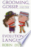
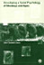

Web
Images
Videos
Maps
News
Shopping
Gmail
more
Books
Finance
Translate
Scholar
Blogs
Realtime
YouTube
Calendar
Photos
Documents
Reader
Sites
Groups
even more »
Account Options
Sign in
My library
Help
Privacy
Advanced Book Search
Grooming, gossip, and the evolution of language
By Robin Dunbar

12 Reviews
Write review
About this book
Add to My Library
▼
Get this book
Harvard University Press
Amazon.com
Barnes&Noble.com
Books-A-Million
Find in a library
All sellers »
Related books

All related books »
Pages displayed by permission of
Harvard University Press
.
Copyright
.
Page 1